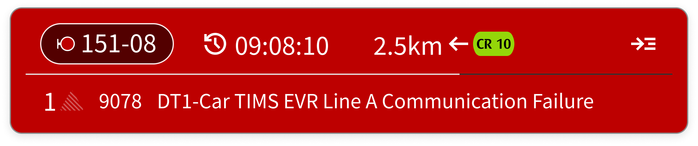

<!doctype html>
<html lang="en">
<head>
  <meta charset="utf-8">
  <meta name="viewport" content="width=device-width, initial-scale=1">
  <meta name="color-scheme" content="light dark">
  <title>CRL-CdM System™</title>
  <link rel="icon" type="image/svg+xml" href="assets/images/favicon.svg">
  <link rel="stylesheet" href="assets/css/style.css">
</head>
<body>
  <main id="stage" aria-label="PHM line monitoring prototype"></main>
  <button id="sidebarToggle" class="hotspot" type="button" aria-label="Expand or collapse sidebar"></button>
  <button id="mapDetailToggle" class="hotspot" type="button" aria-label="Show route detail"></button>
  <button id="previousMode" class="hotspot" type="button" aria-label="Previous map mode"></button>
  <button id="nextMode" class="hotspot" type="button" aria-label="Next map mode"></button>
  <button id="themeToggle" class="hotspot" type="button" aria-label="Switch light and dark theme"></button>
<aside id="alertNotification" aria-hidden="true"></aside>
  <script src="assets/js/app.js"></script>
</body>
</html>
